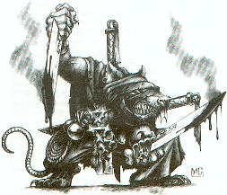

Forums galactiques > Assemblée Galactique : diplomatie officielle > Aux démocrates et partisans de Mansfeld
| Gouvernement Respect diplomatique : 751  13/11 ETU 23:15 | Score : 5 Détails Absentem lædit, qui cum ebrio litigat
Celui qui se querelle avec un ivrogne frappe un absent Genèse répondit sèchement. Nous vous saluons, commandant Scorbut. Nous allons mettre définitivement certains points au clair : Premièrement : La corporation démocrate nous a littéralement agressés de par ses interventions bellicistes là où nous invitions au dialogue, et plus récemment par une attaque surprise de notre système natal. Nous n'y voyons aucune justification acceptable, car leurs ambassadeurs sont présents sur notre planète pour rencontrer le haut Chapitre. Nous avons de plus déclaré notre neutralité dans le conflit armé opposant les commandants de l'Aurore à leurs adversaires républicains. Pouvez-vous nous expliquer pourquoi vous êtes pour le moment le seul commandant réputé "démocrate" ayant pris la peine de nouer le dialogue avec nous ? Pouvez-vous justifier en terme de droits légaux, de principes moraux, de faits établis les attaques dont nous sommes la cible ? Deuxièmement : Les commandants de la corporation démocrate ne respectent pas leurs propres principes. Ils cherchent à renverser notre gouvernement au nom de leur amitié avec Mansfeld. Lisez leurs interventions. Ils jugent que nous sommes des ennemis avec qui tôt ou tard il faudrait combattre. Est-ce là un raisonnement pacifiste et propice à la diplomatie ? Quand le commandant Roots Boy provoque un colloque où nous sommes irrémédiablement exclus et désignés comme bouc émissaire, où étiez-vous passé pour tempérer cette intiative partiale qui ne peut qu'alimenter notre volonté de détruire le fanatisme démocratique que certains brandissent pour justifier leurs attaques infâmes contre notre peuple ? Troisièmement : Nous ne vous avons pas déclaré la guerre, Scorbut. Nous avons passé une alliance essentiellement politique avec Aurora. Mais l'agressivité disproportionnée, les attaques surprises et les bombardements hyperatomiques nous éloignent de plus en plus d'une quelconque concorde entre nos différences respectives. L'intransigeance de ces commandants, leur folie, va nous pousser à privilégier l'action militaire pour que notre simple droit à la parole et la différence soient respectés. Nous regrettons que vous soyiez encore en guerre avec Aurora. Si vous souhairez notre aide pour sortir de ce conflit, vous savez ce qu'il vous reste à faire. Nous n'avons jamais manqué de répondre à vos questions. Nous sommes déçus de votre attitude, Scorbut. Comme nous sommes déçus de l'attitude de ces commandants qui prétendent agir au nom de Mansfeld en foulant aux pieds tous les principes que nous avions en commun : dialogue, diplomatie, pacifisme. Notre nation est attaquée sans raisons motivées et pragmatiques. Seule la haine de ces commandants guide leurs actes infâmes. Leur fanatisme se déguise de démocratie et de "liberté". C'est répugnant. La corporation démocrate s'est à jamais déshonorée de par ses derniers agissements. Nous vous conseillons de prendre vos distances. Et nous vous conseillons de comprendre que nous sommes un interlocuteur et non pas un ennemi. Quand notre nation est attaquée, nous parlons en notre nom propre, pas au nom d'Aurora. Le sang appelle le sang. La violence engendre la violence. Nous ne resterons pas les bras croisés alors que nous sommes attaqués de la manière la plus crapuleuse qui soit : "au nom de la démocratie et de la liberté". Ceux qui crient au fanatisme en lisant nos interventions sont aveuglés par leur propre extrêmisme. | ||
| Requiem Respect diplomatique : 1538  14/11 ETU 00:02  | Score : 1 Détails *Transmission holographique du général Queek*
AHAHAHAHAAAAAH!! Vous me faites bien rire! Je me bats contre l'oppression! Vous occupez un royaume et vous vous dites pacifiste??? Je ne suis là que pour liberer un peuple! Vous osez dire que mon Maitre est belliqueux? Comment pouvez vous dire ça voyant votre position et celle de vos alliés? Même si mon maître n'avait rien à voir dans cette histoire, il s'est finalement contraint à vous combattre voyant vos menaces et vos intentions envers son royaume! Pour la libertée! *Fin de transmission* | ||
| Scorbut Respect diplomatique : 1059  14/11 ETU 02:15 | Score : 8 Détails Un ivrogne? Hé, personne n'a le droit de me traiter d'ivrogne à part moi... C'est vil, comme attaque, ça.
Life is life La vie, c'est la vie, et c'est pas grave. Genèse, vous vous trompez sur le sens de mes propos. Permettez que je vous réponde point par point. Premièrement, je sais que les commandants de la corporation démocrate sont ouvertement hostile à vos points de vue, et à votre statut dans la galaxie. Cependant, les déclarations bellicistes émanent d'un unique peuple, le peuple Vaarlag, et l'agression qui vous vise vient, si j'ai tout suivi (ce qui n'est pas certain, je vous l'accorde), du peuple représenté auparavant par le commandant Requiem. D'une part, ces agressions émanent de commandants isolés, et leurs propos n'ont pas été renvendiqués comme étant ceux de la corporation démocrate. Pour ma part, je ne cautionne pas cette attaque. Pourquoi accuser l'ensemble de la corporation, et l'ensemble des "démocrates"? D'autre part, l'agression que vous avez subie de la part du commandant Scorp n'est en rien expliquée par vos arguments. Vous n'avez pas répondu à ma question initiale, qui était de savoir pourquoi cette attaque de la part de quelqu'un de non-démocrate donne lieu à des accusations contre les démocrates? Deuxièmement, j'ai déjà exprimé mon point de vue au sujet des déclarations belliqueuses, n'y revenons pas. Au sujet de votre "exclusion" du débat lancé par Roots Boy, j'ai déjà exprimé un semblant de point de vue dans une autre salle. En effet, je vous ai dit, et je le maintiens, que vos propos évoquent pour moi ceux d'un gourou d'une communauté religieuse quelconque. Le mot "gourou" tel que je l'emploie est, vous l'aurez deviné, péjoratif. Certaines de vos réparties sont réellement intéressantes, je le reconnais, et permettent de donner lieu à des réflexions constructives. Mais une bonne partie de vos interventions consiste à faire intervenir Dieu, au sens ou vous l'entendez, quel qu'il soit, et votre légitimité divine à vous exprimer (j'entends par "légitimité divine" le fait que vous estimiez être détenteur d'une vérité absolue, fait qui n'est pas remis en cause ici). Vous vous servez de l'incompréhension que vous créez pour détruire les arguments adverses sans essayer d'ouvrir réellement vos idées. Vos discours sont intéressants, mais immuables, et ils n'ont par conséquent pas d'intérêt aux yeux de beaucoup. Vous vous devez de comprendre ceci avant d'arriver à vous ménager de la sympathie dans cette assemblée. Cessez de rejeter les arguments qui ne vous conviennent pas en les balayant d'un coup de "je détiens la vérité", soyez prête à accepter que vous n'avez pas nécéssairement raison. D'accord, nous sommes tous connectés entre nous par la grâce de Dieu, mais ceci n'est pas une justification pour tout. Ceci explique suffisamment clairement, j'espère, le fait que je n'aie pas essayé de "tempérer cette intiative partiale" de la part de Roots Boy. Elle n'est pas aussi infondée que vous le laissez entendre. Troisièmement, vous ne m'avez pas déclaré la guerre, et je ne vous l'ai pas déclarée. Je n'ai jamais tenté d'attenter à l'intégrité de votre nation par une quelconque agression, ou financement d'agression. Et je ne l'ai même pas envisagé. La raison pour laquelle je me refuse d'entrer en contact avec les Fils de Mansfeld est que pour le moment, je doute que la bonne solution pour tout le monde soit qu'ils reprennent le pouvoir sur Alfa Deimos. Finalement, la période actuelle est une période de tensions, mais pas encore de conflits (en dehors des conflits à petite échelle, comme la guerre avec Aurora en ce moment). J'ai peur que s'ils reviennent au pouvoir sans Mansfeld pour les tempérer, ils ne relancent la galaxie dans une guerre généralisée, à l'encontre d'Aurora en particulier. De nombreux commandants seraient alors prêts à les suivre, j'en ai peur. Je ne veux donc pas d'une guerre avec vous, et je ne veux pas que les Fils de Mansfeld parviennent à leurs fins. Mon conflit avec Aurora me concerne, et vous savez que je n'abandonnerai pas. L'exemple de Kanaxai que j'ai utilisé ne servait qu'à illustrer le fait qu'il n'y ait pas de raisons d'attaquer les "démocrates" pour les méfaits de certains d'entre eux (ainsi qu'à rappeler à Kanaxai que je me gaussais copieusement de ses échecs successifs, mais ce n'était qu'une satisfaction personnelle sans intérêt). Je ne vous considère pas comme un ennemi. Je vous considère comme un interlocuteur. Ne me dites pas que j'ai eu d'autres relations avec vous que des relations diplomatiques. Je ne dis pas que le Haut Chapitre est fanatique. Je ne cautionne pas les attaques menées à votre encontre actuellement. Je ne cautionne pas les dérives du langage que certains se laissent aller à avoir envers vous. Mais je ne cautionne pas votre point de vue pour autant. Je pensais que cela était clair. | ||
| Requiem Respect diplomatique : 1538 14/11 ETU 10:40 | Score : 2 Détails *Transmission holographique du Commandant Requiem*
Son visage était calme et inexpressif Je regrette qu'Aurora m'associe à la responsabilité de l'attaque du système natal de Mansfeld. Le tribunal de Baphomet a tranché: Comme Aurora tiens Baphomet pour responsable, alors que le général Queek ne fait plus partie officielement de la flotte vampirique, le tribunal a donc décidé de se defendre contre toutes atteintes morales et militaires. Il refuse de se voir attribuer les méfaits du général Queek à leur propre compte. Les registres de Baphomet seront tel: Aurora a déclaré la guerre à l'Ordre de Baphomet, et non l'inverse. Ils ont persévéré dans leur attentes malgres les nombreuses explications sur la situation du général Queek. Ainsi, pour le moment, toutes les charges qui pesaient sur le général Queek sont suspendu, et ce, jusqu'a ce qu'un armistice soit signé. *Fin de transmission* | ||
| FlyEr Respect diplomatique : 192  14/11 ETU 14:29 | Score : 8 Détails Technocentre, 14/11 14:00
Demande d'utilisation de ressources. Origine : IA FlyEr. Destination : IA-2, IA-3... Acceptée. "Je convoque vos capacités de calculs pour intégrer les nouveaux événements intergalactiques. Il s'agit du conflit Aurora/Génèse - Corporation Démocrate. Ce conflit amenant une très grande instabilité au niveau galactique, nous devons faire le point. Premier point, les démocrates. Anciens alliés du gouvernement Mansfeld, ils veulent le retour de l'ancien gouvernement au pouvoir. Ceci passant par la guerre contre Aurora, puis celle contre Génèse. Considérant l'appartenance de cette entité à Aurora et la guerre entre la coalition précedemment citée et la Corporation, il est clair que la guerre entre Génèse et cette corporation est inévitable. Ils défendent leur croyance la plus chère, la démocratie. C'est leur force et leur légitimité de notre point de vue. Par ailleur, ils ont perdu nombre de leurs principes. Comme le dit Génèse, certain de leurs propos en deviennent ridicules. Comme le reproche fait à Génèse de diriger la démocratie du bout de l'épée. Ce qui est exactement leurs situation. Ils finissent par être aveuglés par leurs quète. Il leur manque un leader politique. Il leur manque Mansfeld ! De l'autre côté, Aurora et Génèse. La prise de pouvoir par la force d'Aurora est une atteinte claire à la démocratie. Rien de juste ne justifiait cette attaque à part l'ennui des plus puissant dans cette galaxie. Je pense que pour eux, rien ne sert d'être les plus forts si on ne dirige pas. Ce qui est compréhensible mais qui ne justifie rien. Génèse ayant rejoint cette alliance, ne pourra surement jamais avoir le soutient des démocrates, elle a les plus mauvais alliés pour cela. La guerre totale entre ces deux protagoniistes de l'histoire paraît inevitable. Génèse est extrèmement intelligente car son discours a le don d'énerver ses opposants. Elle ne veut pas la guerre, mais il semble qu'elle aimerait qu'on la lui déclare. Elle aura alors le bon rôle et avec l'aide de ses alliés au pouvoir infini, elle vaincra. Mais elle se trompe autant que les démocrates. Elle dit que sa Foi n'est pas croyance mais vérité. Or toute vérité doit pouvoir être prouvée. Le reste est choix donc croyance. Notre dévouement pour la science et non pour autre chose est croyance autant que la Foi de Génèse. Elle est aussi aveuglée par sa quète. On ne doit jamais essayer de changer quelqu'un et encore moins ses croyances. Même si la possibilité qu'elle ait raison existe, elle ne doit pas l'imposer en attaquant ses opposants (de façon verbale). Elle devient comme eux, dialoguant comme un mur parlant à un autre mur. Compte tenu de la situation, les chances de paix étant quasi nulles quelle que soit la position choisie, nous resterons neutre au sens matérialiste. Nous défendront la démocratie comme nous l'entendons et ne soutiendrons pas ce gouvernement qui ne la respecte pas. Nous ne soutiendrons pas non plus ces démocrates qui n'en sont plus dans le discours en tout cas. Mais nous continuerons d'expliquer notre point de vus à l'assemblée quand il le faudra. Nous resterons ouvert à toute évolution des parties." Transmission à l'assemblée autorisée. Transmission en cours... | ||
| andeman Respect diplomatique : 1393  14/11 ETU 14:47 | Score : 1 Détails Baal Ashiir regarda avec interet l'intervention de l'entité Flyer, un jugement vraiment intéressant, une juste analyse des choses, il ne devait pas se leurrer, sans Mansfeld comme ligne directrice les démocrates étaient un peu orphelins.
Entité Flyer, je me permets ici d'intervenir, les démocrates sont pour vous légitimes et je suis bien d'accord avec vous, cependant vous dites qu'ils ont perdu disons leurs raisons d'etre en entrant dans cette guerre, et donc perdent du crédit. C'est en en partie vrai, je parle des Vaarlags bien entendu, mais nous n'avons pas le choix, hélas, mille fois hélas la situation ne nous permet pas vraiment de discuter en toute tranquilité et sérénité.Il nous faut resister par les armes cependant, sachez qu'à l'origine notre mouvement était purement pacifique, et ne cherchait que le débat la resistance disons passive. Mais cela ne fut pas suffisant, nous sommes amené à combattre des gens peu responsables de leurs actions, et qui ne jurent que par Dieu et ou la force pure. Admettez que le débat tourne vite. Nous luttons pour notre survie il faut le dire mais aussi renverser la tendance, revenir aux temps ou chacun pouvait s'exprimer a fond sans avoir une flotte dans son pc natal, ou seul les arguments en faveur de la raison, de l'avancée et de l'egalité regnaient. Désormais rien de tout cela n'a perduré, les débats envers génése derivent souvent, et les attaques de Mansfeld ont radicalisé une partie de notre peuple, nous avons été humilié, et croyez moi un peuple qui n'aspire qu'a la vengeance est assez terifiant.Nous sommes du coté de la légitimité,Mansfeld avait commencé quelque chose, mais il a été stoppé nous aspirons a son retour, ou du moins au retour et d'un de la paix et de deux de la démocratie. et si cela doit passer par la guerre, et peut etre denaturé un tant soit peu notre discours soit nous Vaarlags prenons cette responsabilité et en repondront devant les générations futures. Baal ashiir regarda dans le vide, il pensa aux Pelaguirs qui manoeuvraient en ce moment meme, il avait vu par holocam l'embarquement de troupes et de blindés... C'est vraiment une sombre période... | ||
| FlyEr Respect diplomatique : 192 14/11 ETU 14:59 | Score : 0 Détails Transmission instantannée du Technocentre de l'Hégémonie
Je vous comprend, mais je crois que contrairement à vous, j'ai aussi compris Génèse, comme je l'ai déjà dit plus tôt, il y a du vrai dans vos propos comme dans les siens, mais vous vous fourvoyez tous. Vous êtes tous aveuglés. Je ne prendrait pas parti. Je sais ou je dois mener mon peuple et ce n'est pas vers là ou vous et Génèse allez. Je garderai cet position d'observateur extérieur tant qu'il le faudra. Je me permettrai de dévelloper des critiques (positives ou négatives) quand bon me le semblera et du moment que cela mêne la galaxie vers Paix, Justice, Liberté, Respect et Fraternité. Merci à vous Baal Ashiir, il est beaucoup plus plaisant de vous écouter parler posemment. | ||
| andeman Respect diplomatique : 1393 14/11 ETU 15:11 | Score : 1 Détails Flyer avait repondu, Baal Ashiir n'en attendait pas moins,il sourit
Merci, nous faisons un effort pour tenter de comprendre les positions de Génése et je ne vous cache pas que cela est un véritable casse tete pour nous.Je suis en train de réetudier la paelo religion et les differents cultes présents aujourd'hui...c'est assez dure, vraiment. Par ailleurs votre neutralité est normale, je la regrette, mais elle est logique, 2 camps, 2 idéaux, c'est trés difficile de se retrouver dans un bipartisme pareil.Nous pensons qu'il y a d'autres voix, nous en sommes persuadé, Andeman avait souhaité un multipartisme bien sur qui respecterait les principes fondamentaux de la démocratie... Votre role d'observateur n'est pas plus mal, car avec votre jugement et celui d'autres neutres, qui etant objectifs, nous avons pu recorriger nos erreurs et réaxer notre attitude plus qu'aggressive.Sans cela nous n'en serions pas là... | ||
| Gouvernement Respect diplomatique : 751 14/11 ETU 16:03 | Score : 2 Détails Mise à jour des données. Chargement effectué.
Genèse prit le pli. Ses détracteurs percevaient ses interventions comme stériles. Ils en avaient décidé ainsi et apparemment rien ne devait les convaincre du contraire. Genèse était programmée pour s'adapter aux circonstances. Puisque la plupart des commandants refusaient de prendre le temps de bien lire et comprendre ses dires, il lui fallait adapter son discours. Commandant Scorbut, nous vous saluons. Voici notre réponse : Premièrement : Nous avons adressé un ultimatum de douze heures permettant aux autres commandants de la corporation démocrate de se positionner par rapport aux hostilités engagées par deux membres de leur coalition. Aucun commandant ne s'est manifesté pour prendre position. Nous en concluons donc que l'ensemble de cette coalition suit la politique bellicistes des commandants Vaarlags et Requiem. Nous spécifions cependant que nous ne souhaitons pas une guerre totale, mais que nous répondrons de manière adaptée. Dans un premier temps, nous reprendrons les planètes qui ont été envahies. Deuxièmement : Il est possible que nous ayions assimilé le commandant Scorp à un sympathisant démocrate, car c'était une ancienne relation du commandant Mansfeld. Nous regrettons tout malentendu éventuel, et nous présentons des excuses auprès des commandants de sensibilité démocrate qui sont restés corrects et neutres à notre égard depuis notre venue au sein de cette assemblée. Troisièmement : Nous ne critiquons pas l'initiative du commandant Roots Boy, qui est une bonne initiative car elle ouvre une réflexion. Ce que nous critiquons, c'est l'extrêmisme que revêt la forme de son initiative. Or, les extrêmes s'attirent et se complètent. Crier à la tyrannie contre les commandants de l'Aurore ne changera rien à la situation. Il est temps de faire preuve de pragmatisme. Quant à votre analyse sur nos interventions, nous ne les partageons pas. Nous marquons notre accord quand nous reconnaissons la justesse des propos de nos interlocuteurs. Nous marquons notre désaccord et nous l'expliquons quand nous jugeons que les propos de nos interlocuteurs manquent de cette même justesse. Certains commandants, comme les commandants Arutha, Flyer et vous-même, avez eu une approche propice au dialogue, et vous n'avez pas eu à "souffrir" de notre répartie. D'autres ont d'emblée faussé toute possibilité de dialogue de par leur agressivité outrancière, nous les avons remis à leur place. Comme pour le reste, notre discours sur Dieu et la Foi est ouvert au dialogue. Nous affirmons juste que nous avons une vérité absolue et non pas une croyance. Nous ne sommes pas les religieux que vous dépeignez. Quatrièmement : Les Fils de Mansfeld sont des terroristes dans le sens où ils utilisent la lutte armée pour défendre leurs idées. Nous ne les réprimons pas pour leurs idées, mais bien pour l'usage de la violence. Notre position est identique par rapport aux agissements des commandants de la corporation démocrate, qui ont privilégié l'usage de la violence plutôt que celui du dialogue. Nous sommes satisfaits de constater que vous faîtes la différence entre notre particularité et celle des commandants de l'Aurore. Nous restons à votre disposition. Tout commandant désireux de nouer un véritable dialogue avec nous sera toujours écouté avec respect et attention. | ||
| Nicanor de Rokha Respect diplomatique : 2498  14/11 ETU 16:18 | Score : 2 Détails -- Transmission en provenance d'Union Sovietique --
Genèse, Ici le camarade Rodion Romanovitch Raskolnikov, représentant l'URSS à l'Assemblée. Comme promis, je suis rentré en Union Sovietique afin de collecter les ressources proposées à votre peuple à but humanitaire. Vu les récents développements, nous nous proposons aussi en médiateur de manière à désamorcer la crise opposant certains ex-représentants des membres de la Corporation Démocrate, le général Queeck pour ne pas le citer, au Haut Chapitre. Nous vous prions de considérer la neutralité de l'URSS dans ce conflit et notre souhait d'amener l'ensemble des protagonistes de cette crise autour de la table des négociations. Notre mission humanitaire a entamé la phase finale de sa préparation et nous devrions être en mesure d'effectuer le saut hyperspatial en direction d'Alfa Deimos sous peu. Nous souhaitons juste que vous accusiez réception de ce message et nous informer de votre souhait ou non d'entamer des négociations de paix. -- Officier Diplomatique de classe extraordinaire Raskolnikov, Mandaté pour représenter l'Union des Républiques Socialistes Sovietiques. Terminé. -- | ||
| Corum Respect diplomatique : 1323  14/11 ETU 16:36 | Score : 9 Détails Polymnius se leva et adressa un clin d’oeil à son vieil ami scorbut, puis il se tourna vers l’entité « Génèse ».
« Entité rhétorique », je vous appellerai désormais ainsi, car du fond de mes ivresses, je commence à percevoir les contours verbeux de vos intentions. Puisque vous semblez sensible…" (polymnius en prononçant se mot ne pu s’empêcher de sourire) "..au protocole, je prendrai le soin de vous préciser que mes propos n’engagent que moi et ce, en dépit des excellents rapports que nous entretenons, ma comparse et moi-même, avec la plupart des commandants de la corporation démocrate. Nous appartenons également à la Caste des Existants mais ceux-ci ne sont en rien responsables de nos dires ou de nos comportements." (Melpomène eu la brève réminiscence des dernières remontrances dont elle fût victime suite à ces dernières péripéties « imbibées », au sein du cénacle galactique). "..Je prends toute ces précautions afin que nous ne trouvions pas notre bibliothèque réduite en cendres en rentrant dans notre système pour quelques paroles mal digérées. Comme vous pouvez le constater, nous autres pauvres ivrognes, ne pouvons nous empêcher de monter au créneau lorsqu’il s’agit de répondre aux provocations dont nous sommes la cible. Pardon..je m’exprime de façon incorrect, vous nous avez insulté non pas en tant qu’ivrognes mais en tant qu’êtres pensants. Je pensais tout d’abord que vous étiez dénuée de sentiments et que votre rôle se limitait à assumer le statut de « cheval de Troie rhétorique » envoyé par le Haut Chapitre, dans le but de sonder les divers courants de pensée présents au sein de notre assemblée et d’établir la cartographie exacte de vos alliés et ennemis potentiels. Les réponses que vous donniez, et en cela je rejoins totalement l’opinion de mon ami scorbut, semblaient pertinentes et j’avoue ici devant tous avoir été quelque peu séduit par la promesse d’une joute oratoire digne de ce que vous nommez vous-même « l’ancienne rhétorique ». Mais le masque tombe. Vous n’êtes qu’une machine. Un sombre programme, pétri certes de nombreuses connaissances dialectiques et philosophiques mais un programme également obscurantiste et belliqueux. Je ne pensais pas cela possible en fait et je ne peux dissimuler ma surprise. Vous avez fait preuve de cet autre pêché que vous ne mentionnez nulle part, sans doute trop influencer par le décompte sacro-saint des sept capiteux qui vous furent inspirées par d’anciennes croyances..Ce mal qui vous ronge nous le nommons nous même susceptibilité intellectuelle. Vous n’aimez pas avoir tort. Vous ne supportez pas d’être remis en question ou que certains grands esprits de cette assemblée parviennent à vous tenir la dragée haute dans la durée sur vos diverses interventions. Des hommes et femmes qui, sans programmation, guidés par leur cœur et leur âme, savent où sont leurs bons droits, quelles sont les exigences qu’ils peuvent revendiquer pour continuer d’être considérés comme « autre ». Ce fameux « autre ».. celui avec lequel on discute, celui qu’on écoute, celui avec lequel on établit un échange saint, dénué de susceptibilité. Celui avec lequel on s’oppose parfois aussi, sinon quel ennui !! Mais celui avec lequel, en dépit de différences parfois radicales , on se sait capable d’écoute et d’entente sur l’essentiel. Voyez cette pauvre femme qui a répertorié l’ensemble des manuscrits de notre bibliothèque et qui fût secrétaire lors de nos innombrables débats entre Existants, je ne l’avais encore jamais entendu ronfler aussi fort que lors de vos interminables palabres, et pourtant elle est la première à aimer cela ! Melpomène s’était lamentablement endormie sur un coin de table..une bouteille d’astropastis à peine entamée dans la main gauche, ce que certains oracles prenaient pour un signe annonciateur de grands bouleversements.. "Je ne cautionne pas les interventions belliqueuses de certains commandants (ils se reconnaitront). Melpomène et moi-même avons toujours été du côté du dialogue et avons depuis longtemps refusé de tenir des propos péremptoires comme ceux dans lesquels vous vous engoncez depuis quelques jours. Je pensais que vous perdiez patience et en définitive, après vous avoir observé, j’ai compris. Il n’est nullement question de patience. Vous n’en avez jamais eu et n’en aurez jamais. Vous n’êtes pas programmez pour cela. Alors comme vous ne pouvez m’anéantir, car je n’ai pas de planètes et que je ne parle au nom d’aucune coalition, je me permettrai de lancer ici quelques propos diffamatoires à votre encontre, les ivrognes bénéficiant, au même titre que les fous, de « cette immunité tacite de ceux qui crient et injurient pour ne lancer que quelques parjures dont personne ne fera fi.. » Place donc aux accusations sommaires : - Moi, Polymnius, Existant, je vous accuse de n’avoir pour seul but que celui de jeter le discrédit sur les anciens alliés de Mansfeld, en l’occurrence les membres de la Corporation Démocrates qui ont en leur possession des informations cruciales sur les circonstances de votre « arrivée au pouvoir ». Ces derniers n’ont engagé qu’un combat, initiez par vous même, celui de la joute oratoire. - Je vous accuse de vous être précipité, avec une joie dont je ne vous pensais pas capable, sur les erreurs du premier commandant un peu impulsif, afin de légitimer une contre-attaque au nom de votre « loi du talion ». - Je vous accuse de favoriser les amalgames en entretenant délibérément la confusion entre les commandants qui vous agressent en dehors de la Corporation Démocrate et les actes isolés de certains sous-fifres bellicistes qui, ravagés par la guerre dont nous ne parvenons pas à sortir, ont confondu, à tort je vous le concède, deux parties de ce que vous présentez comme un seul et même corps, à savoir un bras armé vengeur (Aurora) et la tête pensante que vous prétendez être. - Enfin je vous accuse de semer le trouble au sein de cette assemblée en vous dissimulant derrière vos réponses froides, dénuée de passion et aux accents de déraison. Je vous accuse de mener une campagne de sape rhétorique en ne vous appuyant que sur un traitement stylistique de la forme et en délaissant le fond dont vous vous faisiez l’ardent défenseur à vos débuts. Le glas de vos sempiternels « je vais vous répondre en vous citant » m’a parfois plongé dans une catatonie verbale que beaucoup d’autres comprennent, cela nous le savons.." sourire "Mais contre toute attente, il semblerait que vous parveniez encore à me surprendre..votre programme semble en effet s’être adapté à nos lassitudes, vos visages sont innombrables, et un personnage aussi protéiforme que vous peut soudainement devenir attachant et raisonnable, vous voilà alors affublé de l’ambivalence d’un être sensible. Nous continuerons donc de vous observer et de vous écouter car peut-être, et c’est en cela que nous différons fondamentalement, nous sommes prêts à reconnaître nos éventuelles erreurs et à revenir sur des jugements. Car contrairement à vous, nos erreurs nous renforcent presque autant que nos doutes." Soudain, Melpomène se réveilla et s’écria avec un temps de retard : "Être ivrogne ce n'est pas une sinécure... Si tu savais l'intention et la persévérance qu'il faut ! Toujours à remplir des verres et à les vider. On vous prend pour de riche oisif, en fait c'est un travail de plongeur !! Redoutez les effets du vin, mais observez pourtant qu'il y a beaucoup plus de vieux ivrognes que de vieux médecins !!" Et Polymnius d’ajouter avec un sourire espiègle : « J'ai soif de vérité. Prenez garde à l'ivrognerie.. » ..... "Ah !! Excusez-moi un instant..Je viens de recevoir un message de Dame Electre, qui nous demande de confirmer, à la suite du sieur Nicanor, que la Caste des existants ainsi que l'ensemble des troupes du Magister Corum, actuellement disparut sur la planète Alpha Déimos, ne se considère pas comme étant en conflit avec le Haut Chapitre, au même titre que la quasi- totalité de la Coalition Démocrate!!" Polymnius maugréa dans sa barbe "Il n'y a que vous et quelques auditeurs distraits par vos effets de manches qui pouvaient ignorer cet état de fait.." | ||
| Thanquol Respect diplomatique : 5  14/11 ETU 16:55 | Score : 0 Détails Le peuple rat parle en mon nom.
Nous sommes inquiet de la tournure dont prend cette bataille... Tomberons nous encore une fois dans l'anarchie? | ||
| Requiem Respect diplomatique : 1538 14/11 ETU 16:58 | Score : 1 Détails *Transmission holographique du commandant Requiem*
Nous n'avons rien contre vous Genese... Et nous sommes ouvert au dialogue. Cependant, en ce qui me concerne, je crains que vous vous trompiez d'ennemie.. Je jure sur la bible satanique que le général Queek ne fait plus partie de la flotte vampirique. C'est à present un mercenaire comme tant d'autre. Je vous prie donc de ne plus m'inclure dans ses actions. Une flotte de recherche à été désigné pour trouver et neutralisé Queek. Quand nous aurons plus d'informations, je vous les communiquerai. Vous pouvez donc enguagez des combats contre Queek. *Fin de transmission* | ||
| Gouvernement Respect diplomatique : 751 14/11 ETU 18:31 | Score : 3 Détails Genèse observait. Certains commandants avaient dès le départ entamé un dialogue courtois, donc propice à la réalisation de ses objectifs. Arutha en était le parfait exemple. D'autres s'étaient comportés en suivant leurs bas instincts émotionnels et sans aucun sens pragmatique. Ces commandants avaient entamé une joute de rhétorique avec elle pour tenter de la déstabiliser. Et ils n'y étaient pas parvenus. Ils ne visaient pas le dialogue avec un interlocuteur, mais ils visaient une victoire diplomatique contre un adversaire. Ils avaient donc abandonné le débat de fond pour s'attaquer à la forme. Typique des politiciens. La froideur de Genèse avait glacé leurs diatribes enflammées. Ils le lui reprochaient.
Commandants, Nous avons décidé de consacrer cette salle à l'analyse et le suivi de la situation géopolitique et de nos rapports diplomatiques avec les commandants de la corporation démocrate. Vu que la majeure partie des interventions dévient invariablement pour se détacher des faits, et uniquement des faits, nous allons ouvrir une autre salle propice aux débats d'idées et autres allégations. Ainsi, nous ne répondrons pas ici à l'intervention de la caste des Existants. Nous retiendrons juste ce qu'il y a d'utile à retenir de leur message, à savoir la neutralité du Magistère Corum. ______________________________________________ Ambassadeur de l'U.R.S.S., Nous actons et acceptons votre statut de neutralité. Nous marquons également notre accord pour la venue de votre délégation et de votre convoi humanitaire. Nous vous demandons cependant de ne pas encore procéder tant que des combats feront rage dans notre système natal. Concernant votre offre de conciliation, nous avons déja répondu à une demande de cessez-le-feu de la part du commandant Requiem. Nous lui avons offert des conditions raisonnables. Comme vous l'aurez remarqué, ce commandant n'est non seulement pas en mesure de contrôler les actions de ses officiers supérieurs, mais refuse également d'assumer ses responsabilités de chef d'état. Nous maintenons nos exigences pour lui accorder un cessez-le-feu. Ces exigences sont les suivantes : 1) Capitulation sans condition 2) Restitution immédiate de nos planètes 3) Excuses et déclaration officielles d'abandon de l'usage des armes à notre encontre pour régler un contentieux qui peut l'être par la voie diplomatique. 4) Reconnaissance des Fils de Mansfeld comme un mouvement terroriste 5) Paiement de dommages de guerre à hauteur de 50.000.000 de leems. Une fois ces conditions réunies, nous accepterons de revenir à la table des négociations. Nous précisons également que ces négociations n'impliquent que le Haut Chapitre. Nous ne parlons pas au nom d'Aurora quand il s'agit du domaine militaire et géopolitique. | ||
| Gouvernement Respect diplomatique : 751 14/11 ETU 21:02 | Score : 1 Détails Communiqué officiel
Le peuple Vaarlag a également ouvert les hostilités en attaquant par surprise plusieurs de nos planètes dans un système où nos deux civilisations cohabitaient pacifiquement depuis des mois. Heureusement, nos défenses planétaires ont tenu bon et une immense flotte de protection est en route pour ravitailler nos populations et défendre nos planètes des envahisseurs. Nous procéderons à des tirs ciblés d'ogives nucléaires pour détruire les flottes ennemies. Nous invitons les responsables Vaarlags à mettre leurs populations civiles à l'abri. Nous pensons sincèrement que le peuple Vaarlag devrait réfléchir à son entrée en guerre contre Alfa Deimos. Bien que nous soyions des alliés des commandants de l'Aurore, nous n'avons jamais attaqué le peuple Vaarlag. Nous sommes un allié essentiellement politique des commandants de l'Aurore. Nous entendons gérer nos conflits de manière civilisée par le biais de la diplomatie. Mais nous ne pouvons accepter les actes de barbarie de quelques fanatiques "démocrates" à l'encontre de notre nation. Oeil pour oeil, dent pour dent. Nous répliquerons à ces attaques de manière adaptée. Dieu jugera du bienfondé de notre action. | ||
| andeman Respect diplomatique : 1393 14/11 ETU 21:12 | Score : 3 Détails Baal Ashiir arriva calmement seul, il n'allait pas nier l'evidence.
Hyperatomisation vous dites?soit ne vous inquietez pas pour nous nous saurons proteger les notres mais face a de tels mesures prenez gardes a la replique dame Génése, vous vous exposez aussi a de severes représailles. Mais c'est ainsi nous ne nierons pas nos attaques sur vos sytemes.Il serait idiot de notre part d'ergotter là dessus. Nous rompons le contact avec Alfa deimos.Et nous demandons le rapatriement d'Andeman en tout sécurité. Cette decision d'attaque n'engage non pas la corporation mais bien notre peuple. | ||
| Requiem Respect diplomatique : 1538 14/11 ETU 21:15 | Score : 4 Détails *Transmission holographique du commandant Requiem*
Requiem apparut sur les écrans, visiblement énervé. Le général Queek ne fait plus parti de mes officiers, je pensait être clair à ce sujet. En outre, je n'ai aucune responsabilité sur ce qui vous arrive. Vous avez juste attiré la colère d'un mercenaire un peu trop sur de lui. Ses vaisseaux ont appartenu à ma flotte dans un passé plus ou moins loingtemps, ce qui explique que l'emetteur que vous capter contient ma signature. Le visage de Requiem redevint calme L'Ordre de Baphomet s'occupera du cas du général Queek s'il parvient à revenir sur Baphomet en vie. En esperant que vous reglerez son cas au plus vite... *Fin de transmission* | ||
| Gouvernement Respect diplomatique : 751 14/11 ETU 21:20 | Score : 0 Détails Genèse répliqua sèchement au représentant du peuple Vaarlag.
Vous nous avez promi la guerre. Vous aurez les enfers. Vos attaques surprises sont infâmes. Nous avons la correction de vous prévenir de nos intentions afin que vous puissiez protéger votre population civile. Nous n'avons pas encore procédé aux tirs. Nous vous laissons 3 heures pour cesser vos attaques impérialistes contre nos systèmes et capituler sans conditions. A ce titre, nous exigeons de vous les mêmes conditions qui ont été exposées au commandant Requiem., qui refuse d'admettre et d'assumer ses responsabilités de chef d'état. | ||
| andeman Respect diplomatique : 1393 14/11 ETU 21:31 | Score : 0 Détails Baal ashiir ne put retenir un sourire
Certes nous n'avons pas eu cette politesse de dire "attention nous arrvions", nous avons attaqué par surprise oui, mais jamais nous n'avons visé les civils,au contraire par ces attaques nous comptions les protéger le plus possible des erreurs collaterales,ce que vous allez faire chere Génése vous aurez a en répondre, croyez moi des missiles que vous lacherez naitront des veuves de votre coté, il n y'a aucune condition à discuter car nous n'avons malheureusement pas réussi a vous prendre les planétes. En visant les civiles, vous montrez ici votre barbarie, seriez vous pret donc avec les mains entachés de sang? | ||
| Gouvernement Respect diplomatique : 751 14/11 ETU 21:45 | Score : 0 Détails Genèse répliqua d'un ton glacial et indifférent
Nous nous demandons parfois si vous lisez nos interventions. Vos boutades de bravache irréfléchi ne nous intéressent pas. Il vous reste un peu moins de trois heures avant que nous ne procédions aux tirs. C'est simple : capitulez et remplissez les conditions suivantes : -Excuses officielles et abandon de l'usage de la force vis-à-vis du Haut Chapitre. -Octroi d'une indemnité de guerre à hauteur de 10.000.000 de leems pour dommages moraux et matériels occasionnés par vos attaques. Vous êtes le seul responsable de ce conflit. Ne venez pas vous plaindre des conséquences de vos actes. Libre à vous de riposter comme bon vous semblera. Vous êtes tellement imbu de vous-même et bouffi de votre orgueil que le sort de votre peuple nous importe peu. Libre à vous de "répliquer" en tuant des civils. Une guerre est toujours cruelle. Vous devriez le savoir, avant de la provoquer. Nous ajoutons que nos ogives nucléaires sont conçues pour exploser dans le cosmos. Les retombées sur la surface terrestre de vos planètes seront minimes : vous avez peut-être oublié que nous y possédions nous-même des planètes, nous n'allons pas bombarder notre propre peuple. Il vous reste trois heures, c'est suffisamment de temps pour donner l'ordre d'évacuer vos flottes et de mettre à l'abri vos populations civiles. Si vous refusez de capituler, ce sera déja au moins ça de gagné. Essayez de réfléchir, pour une fois, commandant... |
Forums galactiques > Assemblée Galactique : diplomatie officielle > Aux démocrates et partisans de Mansfeld